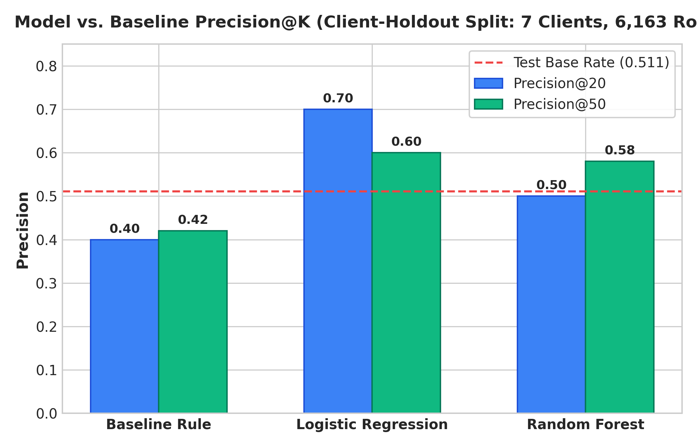
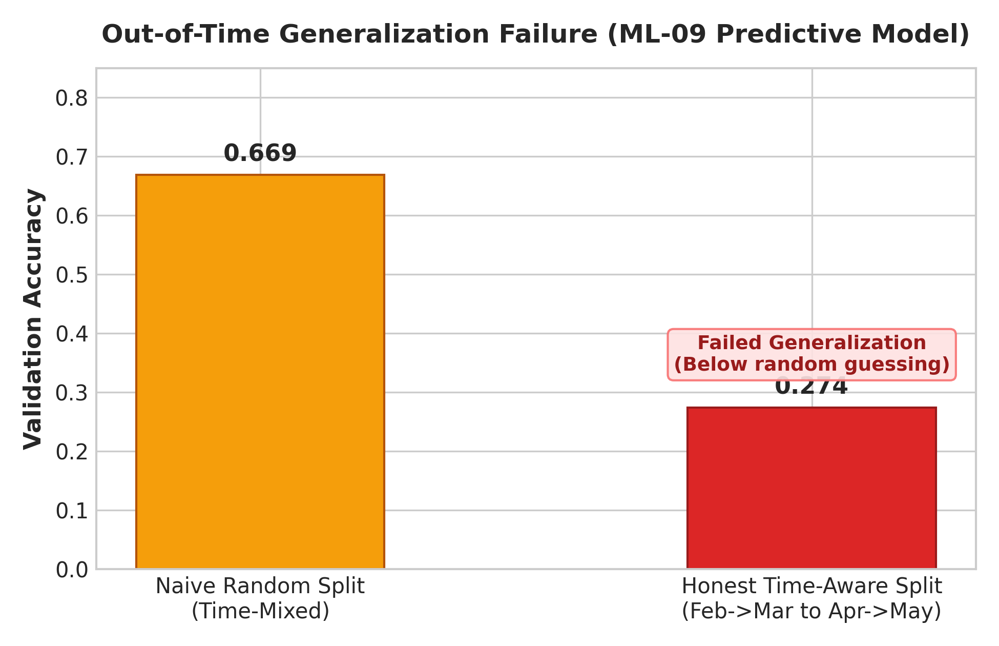
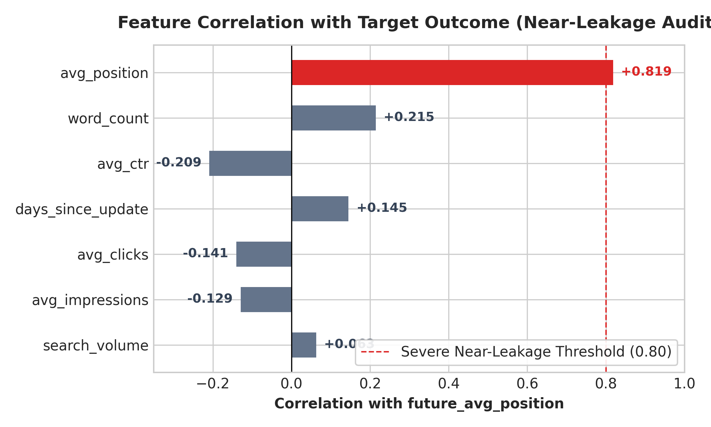
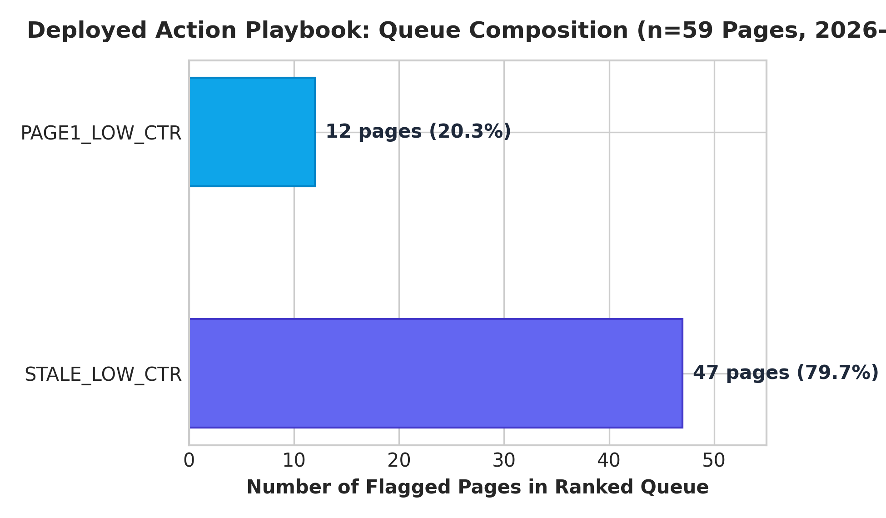

Honest Machine Learning & Decision Support for Search Content Refresh Prioritization
A multi-phase empirical study evaluating heuristic baselines, current-window classifiers, and forward-looking time-series models on 30,000 enterprise pages and 78.8M warehouse records.
Prioritizing content inventory for manual editorial refresh under finite operational capacity requires identifying pages experiencing real performance decline without wasting review bandwidth on healthy URLs. Using an anonymized 30,000-page dataset across 32 enterprise clients alongside a 78.8M-row daily performance warehouse from FlyRank, we evaluated rule-based heuristics, current-window classifiers, and forward-looking time-series predictive models. In client-holdout validation on the 30K dataset, Logistic Regression achieved a Precision@20 of 0.700 and Precision@50 of 0.600 against a base decline rate of 0.511, outperforming a volume-weighted baseline rule (Precision@20 = 0.400, Precision@50 = 0.420). However, when evaluating a forward-looking predictive model on the full warehouse, honest time-aware validation caused accuracy to collapse from 0.669 (naive random split) to 0.274, exacerbated by severe autocorrelation (r = 0.819) between historical position and the target outcome. Consequently, we rejected the predictive model for deployment, implementing instead an evidence-backed, transparent action playbook with structured reason codes (STALE_LOW_CTR and PAGE1_LOW_CTR) to govern human-in-the-loop content refresh queues safely.
02. Introduction & Problem Statement
Organic search traffic represents a primary distribution channel for digital enterprises, yet mature content libraries naturally decay over time as search intent evolves, competitive content emerges, and algorithmic SERP layouts shift. Content marketing and SEO teams face an operational bottleneck: while an enterprise portfolio may encompass tens of thousands of published URLs, editorial teams have capacity to thoroughly audit, rewrite, and optimize only 20 to 50 pages per weekly sprint.
In current industry practice, prioritization is frequently driven by simplistic heuristics—such as ranking pages purely by raw traffic volume or flagging any URL untouched for over 180 days. These naive rules create two costly failure modes:
- False Positives (High Opportunity Cost): Editorial teams waste scarce creative bandwidth refreshing pages that are already holding steady in their ranking distribution, yielding negligible incremental traffic return.
- False Negatives (Compounding Decay): High-potential URLs undergoing silent decay go unnoticed until their rankings fall off Page 1, where recovery requires exponentially more link equity and structural revision.
This research addresses a specific decision-support question: Given fixed weekly review capacity, how can observable search performance signals be combined to construct a high-precision triage queue that maximizes the proportion of truly declining pages presented to human reviewers?
03. Data
This study utilizes two distinct, approved observational datasets provided through the FlyRank Applied Search Intelligence track:
| Dataset Release | Grain & Size | Date Window | Intended Scope & Role |
|---|---|---|---|
Starter Anonymized Datasetcontent_refresh_anonymized.csv |
30,000 pseudonymized URLs (44 columns, 32 clients) |
Trailing 90-day aggregate snapshot | Initial task framing (ML-02–04), baseline heuristic development (ML-07), and client-holdout model benchmarking (ML-08). |
Full Enterprise WarehouseFlyRank/internship-warehouse |
78.8M daily performance rows (28.9M active GSC impressions) |
February 1, 2026 – June 30, 2026 (Multi-month longitudinal fact tables) |
Longitudinal time-aware validation audit (ML-09) and warehouse-scale action queue deployment (ML-10). |
Filtering Criteria & Public Safety Sanitization
In accordance with data governance rules (DATA_USE.md), both datasets were strictly sanitized to maintain public safety and client anonymity:
- Zero Private Identifiers: No client names, domain names, URLs, page titles, or raw search queries are present. All entities are represented by 64-bit cryptographic hash identifiers (e.g.,
client_73cda7b4e4f265ea,content_b7e512995f79d5a6). - Volume & Age Filtering: Restricted to established pages with non-zero historical visibility:
impressions_90d > 0andcontent_age_days >= 90(all 30,000 rows in the starter slice satisfy this floor). - Rate Standardization: All rate columns (
ctr,engagement_rate,scroll_rate,trend_pct) are standardized on a 0–100 percentage scale (e.g.,ctr = 0.76denotes 0.76%). - Observable Signals Only: Models are trained exclusively on observable search traffic, position distributions, and engagement totals—excluding proprietary product decision flags.
04. Methodology
4.1 Task Formulation & Label Definitions
We formulated the prioritization problem across two progressive paradigms:
-
Current-Window Decline Classification (ML-08): Binary label derived from impression trajectories:
is_declining_label = (trend_direction == "down"). A page is classified as declining (1) if impressions in the most recent 30-day window dropped by >20% compared to the prior 30-day window (days 31–60 back), and non-declining (0) otherwise. Across the 30,000-page starter slice, 16,262 pages (54.2% base rate) exhibited decline. -
Forward-Looking Time-Series Prediction (ML-09): Binary label evaluating future rank degradation:
declined = (future_avg_position > avg_position), where features are aggregated over calendar month $T$ and the outcome is observed in calendar month $T+1$ from warehouse daily facts.
4.2 Transparent Baseline Rule
To establish an honest performance floor, we constructed a transparent heuristic combining search position expectations and traffic volume:
where:
• Position Tiers: [1–3], [4–10], [11–20], [21+]
• Below_Tier_Avg_CTR = 1 if CTR < mean(CTR for that position tier), else 0
• Visible_Flag = 1 if Impressions_90d ≥ 500, else 0
4.3 Validation Architecture & Split Designs
To test for true generalization, validation was structured to prevent data leakage:
- Grouped Client-Holdout Split (ML-08): Standard row-random splitting allows models to memorize idiosyncratic client baselines. Using
GroupShuffleSplit(test_size=0.2, random_state=42), the 32 clients were partitioned into 25 training clients (23,837 pages) and 7 held-out evaluation clients (6,163 pages). No client appeared in both splits. - Out-of-Time Longitudinal Split (ML-09): Models were trained on historical transitions (February $\to$ March 2026) and evaluated strictly on subsequent, non-overlapping transitions (April $\to$ May 2026).
trend_direction and trend_pct) were strictly excluded from model feature sets. Longitudinal auditing in ML-09 subsequently uncovered a critical near-leakage autocorrelation ($r = 0.819$), detailed below.
05. Empirical Results Across All Three Phases
Phase 1: Current-Window Classifier Benchmarks (ML-08)
Models were evaluated on the 7 held-out clients (6,163 rows; test base decline rate = 0.511). Logistic Regression emerged as the superior ranking mechanism, especially at the top of the queue:
| Method / Model | Precision@20 | Precision@50 | Test Base Rate | Relative Lift (@P50) |
|---|---|---|---|---|
| Baseline Rule (Volume-Weighted) | 0.400 | 0.420 | 0.511 | -17.8% vs Base Rate |
| Logistic Regression (Selected) | 0.700 | 0.600 | 0.511 | +42.9% vs Baseline |
| Random Forest (200 trees, depth 6) | 0.500 | 0.580 | 0.511 | +38.1% vs Baseline |

Feature Coefficients & Model Disagreement: Logistic Regression assigned the largest negative weight to ctr ($-0.0528$), indicating that underperforming CTR is the primary linear signal of current decline. Conversely, Random Forest placed 53.1% of its total split importance on raw scale features: impressions_90d (0.303) and avg_position (0.228).
Phase 2: Longitudinal Warehouse Validation & Model Collapse (ML-09)
To verify whether this predictive capability translates to forecasting future performance, we scaled to the 78.8M-row warehouse and tested a forward-looking model (predicting whether a page's average position worsens in the subsequent month).

The Near-Leakage Audit Finding: Investigating the root cause of this failure revealed that avg_position exhibited an $r = 0.819$ correlation with the target outcome variable future_avg_position.

Phase 3: The Deployed Action Playbook (ML-10)
Following the disqualification of the uncalibrated predictive model, the final deployed system utilizes an interpretable, re-validated prioritization score built on confirmed empirical relationships:
Applied to the March 2026 warehouse partition (`month=2026-03`), the system generated an actionable triage queue of 59 high-priority refresh candidates classified by clear reason codes:

STALE_LOW_CTR (extended staleness with depressed CTR), while 12 pages (20.3%) were flagged under PAGE1_LOW_CTR (Page 1 visibility ranking 1–10 with sub-0.5% CTR).
06. Limitations & Honest Framing
Trust in machine learning systems is earned by explicitly stating what the evidence cannot prove. This work operates under the following structural constraints:
- Correlational, Non-Causal Nature: All metrics reflect observational associations in historical GSC and GA4 tracking logs. Flagging a page for refresh does not guarantee rank recovery; causal impact can only be established through randomized prospective A/B content refresh experiments.
- No Temporal Invariance Guarantee for Current-Window Models: While Logistic Regression achieved strong Precision@50 (0.600) on held-out clients, it was validated within a single 90-day snapshot. As demonstrated in ML-09, tabular ranking relationships are subject to seasonal concept drift.
- Limited Client Diversity in Starter Slice: The 30,000-page dataset represents 32 enterprise clients. Although grouped splitting prevented client memorization, cohort-level domain bias cannot be ruled out.
- Granularity Disconnect: The starter slice utilizes 90-day static aggregations, whereas the warehouse provides daily granularity. Static rates obscure intra-quarter decay velocities.
- Absence of Semantic and SERP Context: Tabular features contain no qualitative data regarding content quality, topical depth, search intent shifts, Google algorithm updates, or competitor publication velocity.
- Autocorrelation Vulnerability: Search position is naturally persistent ($r = 0.819$). Models formulated to predict position deltas are prone to exploiting mechanical headroom bounds rather than true content decay dynamics.
07. Ranked Recommendations & Operational Protocol
7.1 Deployed Action Playbook Summary
| Reason Code | Trigger Criteria | Queue Share | Recommended Editorial Action |
|---|---|---|---|
PAGE1_LOW_CTR |
Avg Position ≤ 10 Avg CTR < 0.50% |
12 pages (20.3%) | SERP Snippet Optimization: Rewrite meta titles, improve H1 hooks, add schema markup, and address search intent mismatches to capture available impressions. |
STALE_LOW_CTR |
Days Since Update ≥ 90 Depressed CTR / Visibility |
47 pages (79.7%) | Comprehensive Content Refresh: Update outdated statistics, expand thin sections, refresh internal links, and prune dead references. |
7.2 Human Review Protocol
Prior to modifying any flagged URL, human editors must execute the following 4-step checklist:
- Step 1 (Strategic Relevance): Confirm the page aligns with current commercial offerings and is not scheduled for deprecation.
- Step 2 (Active Edit Check): Verify that the URL is not already undergoing staging revisions.
- Step 3 (Anomaly Isolation): Check whether recent traffic dips stem from technical site bugs or broad seasonal cycles rather than content staleness.
- Step 4 (Tracking Integrity): Verify that GA4/GSC tracking tags on the client domain are firing reliably.
7.3 Operational No-Go List
- ❌ Never auto-publish AI-generated content without human editorial review and fact-checking.
- ❌ Never auto-delete or de-index pages based solely on triage scores.
- ❌ Never promise client-facing traffic guarantees based on prioritization ranks.
- ❌ Never deploy uncalibrated outputs from the retired ML-09 predictive model.
7.4 Monitoring & Retraining Triggers
To prevent silent failure, the prioritization queue is monitored against the warehouse distribution:
08. Reproducibility
All experiments, splits, models, and data audits are fully open-source and reproducible from the repository notebooks:
- Code Repository: https://github.com/EimanZahra1472/flyrank-ml-internship-starter
- Capstone Notebook:
work/notebooks/capstone.ipynb - Baseline & Audit Notebooks:
w01_research_question.ipynbthroughw07_action_playbook.ipynb - Environment Stack: Python 3.10+,
scikit-learn 1.3+,pandas 2.0+,duckdb 0.9+,matplotlib 3.7+. Fixed random seed:42.
09. Acknowledgments & Data Credit
This research was conducted as part of the Applied Search Intelligence Track.